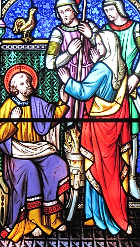

La Bouonne Nouvelle s'lon Jean, Chapitre 18
Vèrsets 1-11
Vèrsets 12-24
Épis la dgaîngue et l'cap'taine et l's officièrs blioutchîdrent Jésû et l'amathîdrent. Pouor c'menchi i' l'emm'nîdrent siez Annas, tchi 'tait l'bieau-péthe à Caiaphas l'grand prêtre dé ch't' année-là. Chu Caiaphas 'tait l'chein tch'avait avisé ès Juis qué ch'tait d'lus întéthêt qu'un houmme meuthe au run du peupl'ye.
Simon l'Rotchi s'en fut souotre Jésû acanté un aut' discipl'ye. Ch't aut' discipl'ye 'tait un accouaint du grand prêtre et il entrit don acanté Jésû siez l'grand prêtre. Mais l'Rotchi fut laîssi ès êcouettes au pas d'l'us. Épis ch't aut' discipl'ye, l'accouaint du grand prêtre, s'dêhalit et pâlit à la hardelle tchi 'tait à garder l'us et emm'nit l'Rotchi par-dédans. Chutte hardelle dit au Rotchi, "Ch'n'est-i' pon qu'tu'es iun des discipl'yes à ch't homme-là?"
"Nou-fait-dgia!" qu'i' s'fit.
Assa les sèrveurs et l's officièrs avaient grée un radgîn d'feu d'tchèrbon par cause qu'i' faîthait fraid. I' lus caûffaient l'avant et l'Rotchi 'tait d'compangnie auve ieux à s'caûffer là étout.
Lé grand prêtre tchestchionnit Jésû entouor ses discipl'yes et chein qu'il ensîngnait. Jésû lî rêponnit, "J'ai prêchi tréjous à l'ouèrt l'avant au monde. J'ai prêchi dans les synnagogues et dans l'Templ'ye à l'assembliée d'touos les Juis, et j'n'ai rein dit en cache-muche. Pouortchi qu'tu m'tchestchionne dé même? Tchestchionne pus à co les cheins tchi m'ont êcouté pouor saver chein qu'j'lus ai prêchi. I' savent, ieux, chein qu'j'ai dit."
Un co qu'il avait dit chennechîn, iun d's officièrs tchi 'tait au ras d'li lî baillit eune cliamûthe et lî dit, "Ôse-tu rêpondre dé même au grand prêtre?"
Jésû r'dit, "Si j'ai dit ma, têmouongne dans tchi qu'est l'ma! Mais si chein qu'j'ai dit est vrai, pouortchi chutte cliamûthe?"
Épis Annas l'env'yit enhalaûdé siez Caiaphas l'grand prêtre.
Vèrsets 25-27

Mais Simon Pièrre 'tait mâté là à s'caûffer. Nou lî dit don, "N'es-tu pon iun d'ses discipl'yes?" I' l'èrnyit et dit, "Nôsette!"
Iun des sèrvants du grand prêtre 'tait un couôthîn du chein à tchi Pièrre avait copé l'ouothelle, et i' lî dit, "Jé n't'avais-t-i' pon veu dans l'gardîn acanté li?"
Pièrre l'èrnyit dèrché, et d'siette lé co chantit.
Vèrsets 28-32
Épis il' am'nîdrent Jésû sus l'matîn d'siez Caïphe siez Pilate. Ieux, i' n'entrîdrent pon par d'dans à seule fîn dé n'pon lus enteuther et d'en êt' exclius du fricot d'la Pâque. Pilate don s'dêhalit à ieux et dit, "Tch'est qu'est l'atchûsâtion qu'ou louogiz contre ch't houmme-chîn?"
I' rêponnîdrent, "Si ch'tî-chîn n'tait pon un malfaiteux, jé n'l'éthêmes pon donné entre tes mains."
Pilate lus dit, "Halez-lé vous-mêmes et jugiz-lé s'lon vot' louai."
Les Juis rêponnîdrent, "Jé n'sommes pon alloués d'mett' autchun à mort." (Chennechîn ch'tait pouor accomplyi chein qu'Jésû avait dit quand il explyitchit coumme tchi qu'i' s'n'allait mouothi.)
Vèrsets 33-38
Vèrsets 38-40
Un co qu'il avait dit chenna, i' s'èrdêhalit ès Juis et lus dit, "Jé n'trouve pon qu'il est coupabl'ye. Mais s'lon vot' vielle couôteunme, j'ai à libéther tchitchun pouor vous à la Pâque Juive. Voul'-ous qué j'libéthe pouor vous chu Rouai des Juis?"
I' briyîdrent en rêponse, "Fiche dé ch't houmme-là! Bâle-nous Barabbâ!" Chu Barabbâ 'tait un voleux, li.
Viyiz étout:
- La Bibl'ye
- La Bouonne Nouvelle s'lon Jean: 1
- La Pathole 'tait au c'menchement
- La Pathole 'tait au c'menchement
- La Pathole 'tait au c'menchement
- La Pathole 'tait au c'menchement
- La Bouonne Nouvelle s'lon Jean, Chapitre 2
- La Bouonne Nouvelle s'lon Jean: chapitre 3
- La Bouonne Nouvelle s'lon Jean: chapitre 4
- La Bouonne Nouvelle s'lon Jean, Chapitre 5
- La Bouonne Nouvelle s'lon Jean, Chapitre 8
- La Bouonne Nouvelle s'lon Jean, Chapitre 9
- La Bouonne Nouvelle s'lon Jean, Chapitre 10
- La Bouonne Nouvelle s'lon Jean, Chapitre 11
- L'Evangile dé Saint Jean, Chapitre 11, vèrsets 17-37
- La Bouonne Nouvelle s'lon Jean, Chapitre 11, vèrsets 45-53
- La Bouonne Nouvelle s'lon Jean, Chapitre 12
- La Bouonne Nouvelle s'lon Jean, Chapitre 13
- Jean: 14, vèrsets i-xiv
- L'Êvangile s'lon St. Jean, chapitre quatorze, vèrsets iun à six et vèrset vîngt-sept
- L'Êvangile s'lon Saint Jean - chapitre 14, vèrsets viii à xxxi
- L'Êvangile s'lon St. Jean, chapitre tchînze, vèrsets iun à huit
- La Bouonne Nouvelle s'lon Jean, chapitre 15, vèrsets 9-17
- La Bouonne Nouvelle s'lon Jean: 15, vèrsets 18-27
- Jean: 18, vèrsets i-xi
- Jean: 18, vèrsets xxxiii-xxxviii
- Jean: 19
- La Bouonne Nouvelle s'lon Jean: chapitre 20
- La Bouonne Nouvelle s'lon Jean, chapitre 21